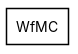
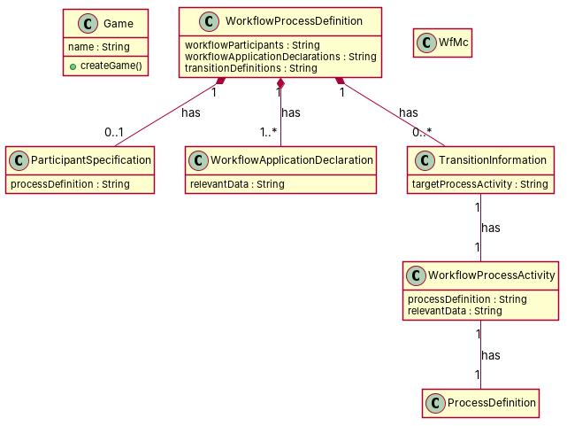

R1: Implementation of WorkflowApplicationDeclaration R2: Interface for workflow R3: Class that has the data related to workflow R4: A WfMC model has workflow participant specifications R5: Workflow State class R6: Workflow State Class, collaborates with WorkflowProcessActivity R7: workflowprocessdefinition has zero or more participantspecifications R8: A workflow process definition is composed of a set workflow application declaration. R9: A workflow process definition is composed of a set of transition definitions R10: Abstract and Concrete classes for workflow R11: A workflow application declaration might have associated relevant data R12: Abstract and Concrete classes related to specific functionality in Workflow R13: In WfMC, the workflow's relevant data has 0 or more WorkflowProcessActivity as process activities. R14: In WfMC, the workflow's relevant data has 0 or more transition informations. R15: In WfMC, the workflow's participant specification has exactly one process definition. R16: In WfMC, the workflow's participant specification has 0 more process activities. R17: A workflow process activity has exactly one process definition in the workflow. R18: A workflow process activity has 0 or many relevant data in the workflow. R19: Collaborating classes for Activity/Transition (i.e. workflow state) R20: Workflow Transition information is part of the Workflow Definition R21: A transition information has exactly one workflow process activity to go to.
Red, struck-through: removed by ambiguity removal; green: added.
| actors (0 → 0) |
|---|
| classes (9 → 9) |
|---|
| Concrete |
| ProcessActivity |
| ProcessDefinition |
| Specification |
| TransitionInformation |
| WfMc |
| Workflow |
| WorkflowProcessDefinition |
| Workflowprocessactivity |
| attributes (1 → 1) |
|---|
| TransitionInformation.workflow process activity |
| relations (4 → 4) |
|---|
| has: ProcessActivity -> ProcessDefinition |
| has: Specification -> ProcessActivity |
| has: Specification -> ProcessDefinition |
| has: Workflow -> Specification |
| id | req | type | cue | status | readings / explanation |
|---|---|---|---|---|---|
| A1 | R7 | quantifier | zero or more | resolved | 0..*; 1..* The term 'has zero or more participantspecifications' could mean either 0 or more or 1 or more. |
| A2 | R11 | incompleteness | relevant | resolved | relevant data exists; relevant data does not exist The phrase 'A workflow application declaration might have associated relevant data' is ambiguous as it could mean the data might or might not exist. |
| A3 | R13 | quantifier | 0 or more | resolved | 0..*; 1..* The term 'has 0 or more WorkflowProcessActivity as process activities' could mean either 0 or more or 1 or more. |
| A4 | R13 | incompleteness | relevant | resolved | relevant data exists; relevant data does not exist The phrase 'In WfMC, the workflow's relevant data has 0 or more WorkflowProcessActivity as process activities' is ambiguous as it could mean the data might or might not exist. |
| A5 | R14 | quantifier | 0 or more | resolved | 0..*; 1..* The term 'has 0 or more transition informations' could mean either 0 or more or 1 or more. |
| A6 | R14 | incompleteness | informations | resolved | informations exists; informations does not exist The phrase 'In WfMC, the workflow's relevant data has 0 or more transition informations' is ambiguous as it could mean the informations might or might not exist. |
| A7 | R18 | quantifier | 0 or many | resolved | 0..*; 1..* The term 'has 0 or many relevant data in the workflow' could mean either 0 or more or 1 or more. |
| A8 | R18 | incompleteness | relevant | resolved | relevant data exists; relevant data does not exist The phrase 'A workflow process activity has 0 or many relevant data in the workflow' is ambiguous as it could mean the data might or might not exist. |
| A9 | R20 | incompleteness | information | resolved | information exists; information does not exist The phrase 'Workflow Transition information is part of the Workflow Definition' is ambiguous as it could mean the information might or might not exist. |
| A10 | R21 | incompleteness | information | resolved | information exists; information does not exist The phrase 'A transition information has exactly one workflow process activity to go to' is ambiguous as it could mean the information might or might not exist. |


"""Code skeleton generated from the shared model of D2/WfMC.
Every class and method records the requirement(s) it traces to."""
from __future__ import annotations
import dataclasses as _dc
import enum as _enum
import typing as _t
@_dc.dataclass
class Game:
"""Source: R1"""
name: _t.Optional[str] = None
def createGame(self) -> None:
"""Operation."""
raise NotImplementedError
@_dc.dataclass
class WorkflowProcessDefinition:
"""Source: R8, R9, R10"""
workflowParticipants: _t.Optional[str] = None
workflowApplicationDeclarations: _t.Optional[str] = None
transitionDefinitions: _t.Optional[str] = None
participantSpecification: _t.Optional["ParticipantSpecification"] = None
transitionInformations: _t.List["TransitionInformation"] = _dc.field(default_factory=list)
@_dc.dataclass
class ParticipantSpecification:
"""Source: R15"""
processDefinition: _t.Optional[str] = None
@_dc.dataclass
class WorkflowApplicationDeclaration:
"""Source: R11"""
relevantData: _t.Optional[str] = None
@_dc.dataclass
class TransitionInformation:
"""Source: R20, R21"""
targetProcessActivity: _t.Optional[str] = None
workflowProcessActivity: _t.Optional["WorkflowProcessActivity"] = None
@_dc.dataclass
class WorkflowProcessActivity:
"""Source: R13, R16, R17, R18"""
processDefinition: _t.Optional[str] = None
relevantData: _t.Optional[str] = None
@_dc.dataclass
class ProcessDefinition:
"""Source: R10, R17"""
pass
@_dc.dataclass
class WfMc:
"""Source: R4"""
pass
| python_compiles | True |
|---|---|
| java_compiles | True |
| attribute_mismatches | 0 |
| method_mismatches | 0 |
| use_cases | 0 |
| use_cases_without_actor | 0 |
| use_cases_without_method | 0 |
| actors_without_use_case | 0 |
| relations_to_unknown_class | 0 |
| inconsistencies | 0 |
| inconsistency_rate | 0.0 |
| requirement_coverage | 0.6667 |
| validator fixes | |
| assumptions for open ambiguities | [{"tag": "A3", "assumption": "The WfMc class is assumed to be the main container for workflow definitions and related data, as it is not explicitly defined in the requirements but is implied by the relationships."}] |
| element | P | R | F1 | TP/FP/FN |
|---|---|---|---|---|
| classes | 0.5 | 0.667 | 0.571 | 4/4/2 |
| attributes | 0.0 | 0.0 | 0.0 | 0/9/0 |
| relations | 0.6 | 0.25 | 0.353 | 3/2/9 |
| relations_strict | 0.6 | 0.25 | 0.353 | 3/2/9 |